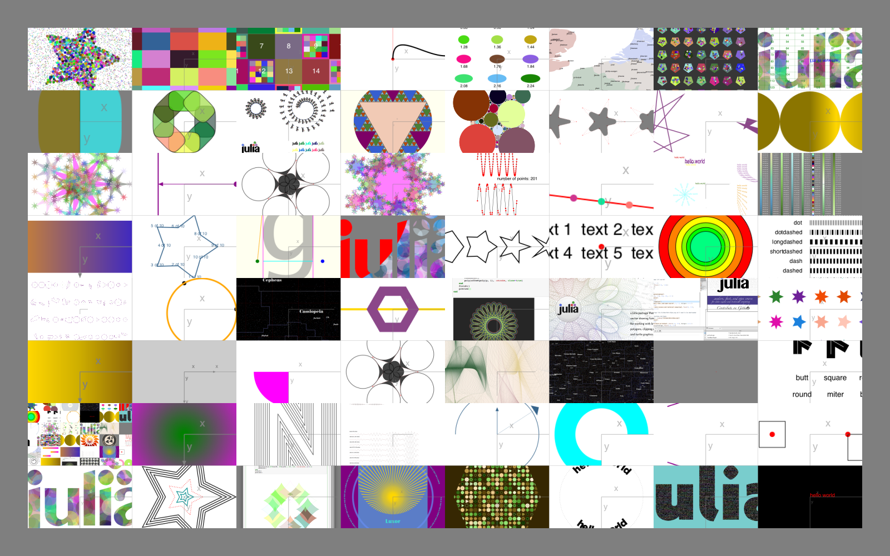
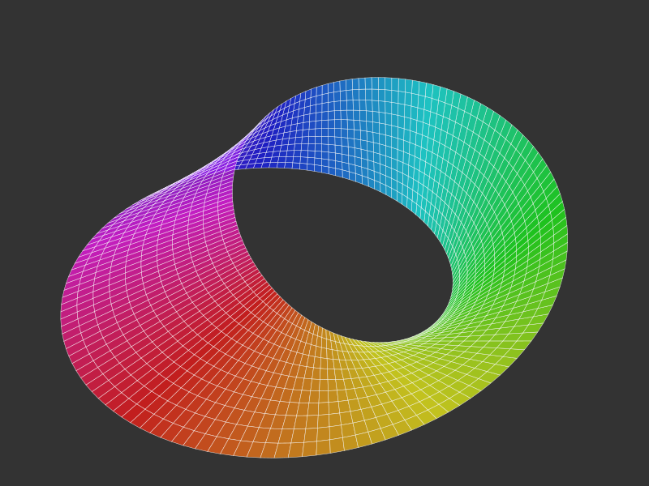
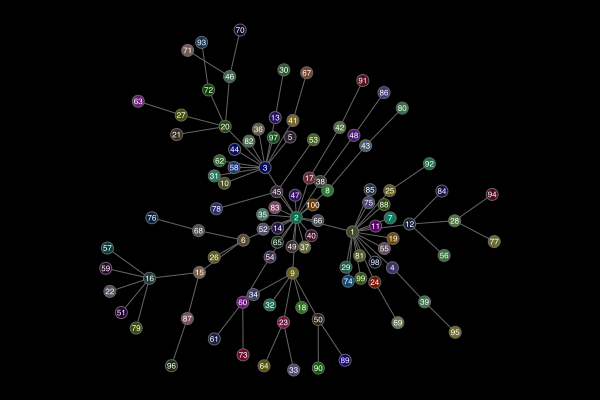
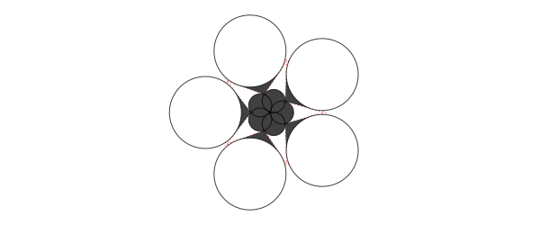
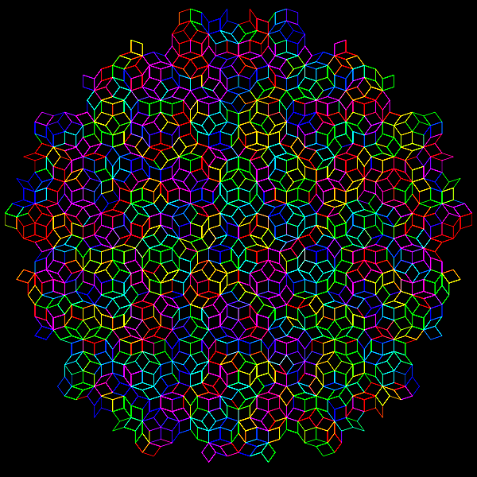
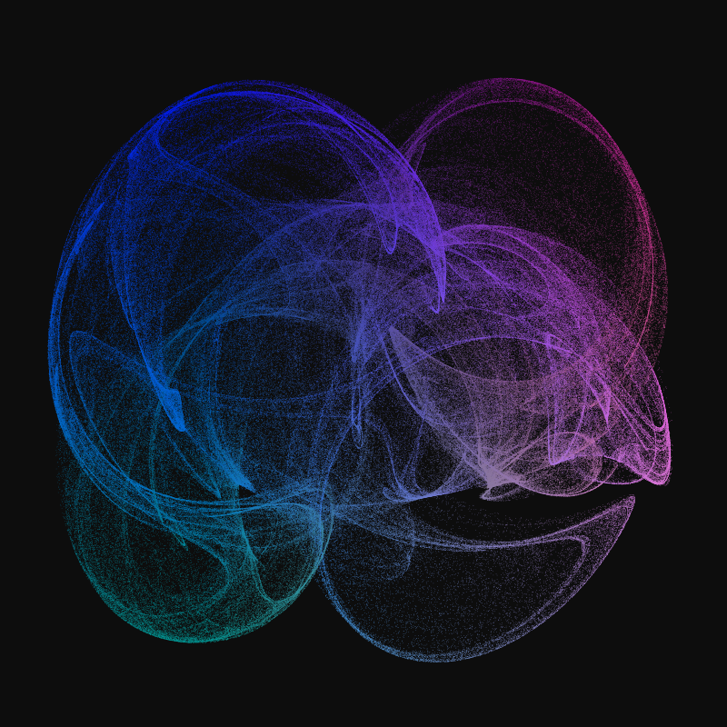

More examples
One place to look for examples is the Luxor/test directory.

Other packages that work with Luxor
3D with Thebes.jl
Some limited 3D graphics capabilities can be added to Luxor using the Thebes.jl package.

using Luxorusing Thebesusing Colorsfunction makemobius() x(u, v) = (1 + (v / 2 * cos(u / 2))) * cos(u) y(u, v) = (1 + (v / 2 * cos(u / 2))) * sin(u) z(u, v) = v / 2 * sin(u / 2) w = 1 st = 2π / 150 Δ = 0.2 result = Array{Point3D,1}[] for u in 0:st:2π-st for v in -w:Δ:w p1 = Point3D( x(u, v + Δ / 2), y(u, v + Δ / 2), z(u, v + Δ / 2)) p2 = Point3D( x(u + st, v + Δ / 2), y(u + st, v + Δ / 2), z(u + st, v + Δ / 2)) p3 = Point3D( x(u + st, v - Δ / 2), y(u + st, v - Δ / 2), z(u + st, v - Δ / 2)) p4 = Point3D( x(u, v - Δ / 2), y(u, v - Δ / 2), z(u, v - Δ / 2)) push!(result, [p1, p2, p3, p4]) end end return resultend@svg begin background("grey20") eyepoint(300, 250, 400) setline(0.5) setopacity(0.8) mb = makemobius() for pgon in mb randomhue() pin(100pgon, gfunction = (pt3, pt2) -> begin a = cartesiantospherical(pt3[1]) sethue(HSL(rescale(a[2], 0, 2π, 0, 360), 0.8, 0.5)) poly(pt2, :fillpreserve, close=true) sethue("white") strokepath() end ) endend 800 600 "mobius-band.svg"Graphs with Karnak
Luxor provides the drawing tools for the graph visualization package Karnak.

using Karnakusing Graphsusing Colorsg = barabasi_albert(100, 1)@drawsvg begin background("black") sethue("grey40") fontsize(8) drawgraph(g, layout=stress, vertexlabels = 1:nv(g), vertexfillcolors = [RGB(rand()/2, rand()/2, rand()/2) for i in 1:nv(g)] )end 600 400Illustrating this document
This documentation was built with Documenter.jl, which is an amazingly powerful and flexible documentation generator written in Julia. The illustrations are mostly created when the HTML pages are built: the Julia source for the image is stored in the Markdown source document, and the code to create the images runs each time the documentation is generated.
The Markdown markup looks like this:
```@example
using Luxor, Random # hide
Drawing(600, 250, "../assets/figures/polysmooth-pathological.png") # hide
origin() # hide
background("white") # hide
setopacity(0.75) # hide
Random.seed!(42) # hide
setline(1) # hide
p = star(O, 60, 5, 0.35, 0, vertices=true)
setdash("dot")
sethue("red")
prettypoly(p, close=true, action = :stroke)
setdash("solid")
sethue("black")
polysmooth(p, 40, :fill, debug=true)
finish() # hide
```
and after you run Documenter's build process the HTML output looks like this:
p = star(O, 60, 5, 0.35, 0, vertices=true)setdash("dot")sethue("red")prettypoly(p, close=true, action = :stroke)setdash("solid")sethue("black")polysmooth(p, 40, :fill, debug=true)
Why turtles?
An interesting application for turtle-style graphics is for drawing Lindenmayer systems (l-systems). Here's an example of how a complex pattern can emerge from a simple set of rules, taken from Lindenmayer.jl:

The definition of this figure is:
penrose = LSystem(Dict("X" => "PM++QM----YM[-PM----XM]++t", "Y" => "+PM--QM[---XM--YM]+t", "P" => "-XM++YM[+++PM++QM]-t", "Q" => "--PM++++XM[+QM++++YM]--YMt", "M" => "F", "F" => ""), "1[Y]++[Y]++[Y]++[Y]++[Y]")where some of the characters—eg "F", "+", "-", and "t"—issue turtle control commands, and others—"X,", "Y", "P", and "Q"—refer to specific components of the design. The execution of the l-system involves replacing every occurrence in the drawing code of every dictionary key with the matching values.
Strange
It's usually better to draw fractals and similar images using pixels and image processing tools. But just for fun it's an interesting experiment to render a strange attractor image using vector drawing rather than placing pixels.
using Luxor, Colorsfunction strange(dotsize, w=800.0) xmin = -2.0; xmax = 2.0; ymin= -2.0; ymax = 2.0 Drawing(w, w, "../assets/figures/strange-vector.png") origin() background("grey5") xinc = w / (xmax - xmin) yinc = w / (ymax - ymin) # control parameters a = 2.24 b = 0.43 c = -0.65 d = -2.43 e1 = 1.0 x = y = z = 0.0 wover2 = w / 2 - 50 # margin for j = 1:w for i = 1:w xx = sin(a * y) - z * cos(b * x) yy = z * sin(c * x) - cos(d * y) zz = e1 * sin(x) x = xx y = yy z = zz if xx < xmax && xx > xmin if yy < ymax && yy > ymin xpos = rescale( xx, xmin, xmax, -wover2, wover2, ) # scale to range ypos = rescale( yy, ymin, ymax, -wover2, wover2, ) # scale to range rcolor = rescale(xx, -1, 1, 0.0, 0.6) gcolor = rescale(yy, -1, 1, 0.2, 0.5) bcolor = rescale(zz, -1, 1, 0.6, 0.9) setcolor(rcolor, gcolor, bcolor) move(Point(xpos, ypos)) line(Point(xpos + dotsize, ypos)) line(Point( xpos + dotsize, ypos + dotsize, )) line(Point(xpos, ypos + dotsize)) fillpath() end end end end finish()endstrange(.5, 800)
This example generates about 650,000 paths, which is why it’s better to target PNG rather than SVG or PDF for this example. Also for speed, the “dots” are actually simple square paths, which are slightly quicker to draw than circles or polygons.
More animations
Most of the animations on this YouTube channel are made with Luxor.